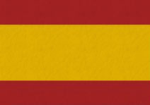
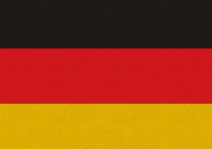

| Estado del artículo / Condition / Zustand | Estado / Condition / Zustand = 0 | ||||
|---|---|---|---|---|---|
| 0 | 1 | 2 | 3 | 4 | |
| La condición del estado/ condición se refiere al artículo, NO al embalaje. Condition refers to the article NOT to the box condition. Der Zustand beziehtsich auf den Artikel und nicht auf die OVP, diese kann Lagerspuren haben. |
|||||
|  | Artículo en perfecto estado, casi como nuevo. Artículo de vitrina sin usar. | Artículo en muy buen estado, con muy poco uso. No le falta ninguna pieza. | Artículo en buen estado. Por el uso podría tener un rayón mínimo en la pintura o podría faltarle alguna pieza. | Artículo con señales muy visibles de uso. | El artículo sirve para bricoladores. Para usar como piezas de repuesto. |
| Mint condition, minimal traces, for test runs arep possible. | Very good condition with small traces of usage. | Good conditiion. Traces of usage. Partially paint flaws. Small parts might be missing. | Used. Visible traces of usage. | The item ought to be used to get spare parts. Parts might be missing. | |
|  | neuwertiger Zustand, minimale Spuren von Probefahrten sind möglich. | sehr guter Zustand mit leichten Gebrauchsspuren. | guter Zustand mit Gebrauchsspuren teilweise mit Lackfehlem, Kleinteile können fehlen. | bespielt mit deutlichen Gebrauchsspuren. | Ersatzteilspender, Teile könnenfehlen. |